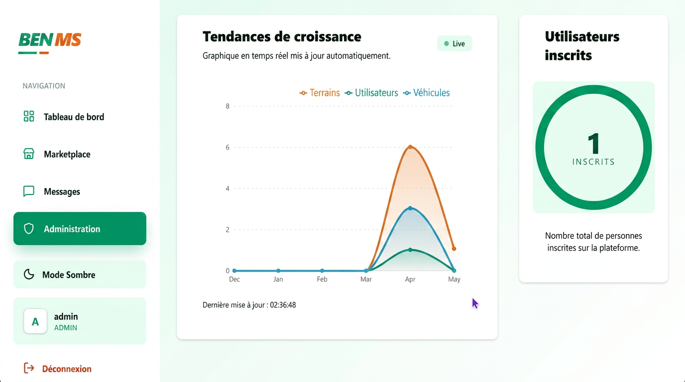

01 / 03
BENMS — Marketplace immobilier & véhicules
Plateforme complète de vente de terrains et de véhicules avec tableau de bord administrateur, statistiques en temps réel, gestion utilisateurs et système de marketplace.
- Django
- PostgreSQL
- React
- Tailwind
